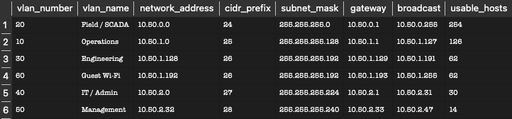
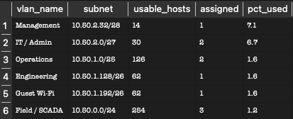
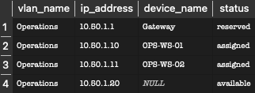
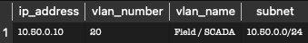
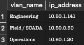
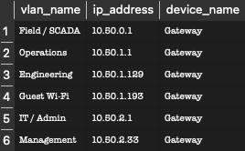
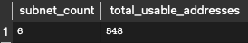

Network Design
The network uses the block 10.50.0.0/16, divided into six subnets — one per department VLAN. Each subnet is sized with variable-length subnet masking (VLSM), allocated largest-first so they pack with no overlaps.
| VLAN | Department | Subnet | Gateway | Usable Hosts |
|---|---|---|---|---|
| 20 | Field / SCADA | 10.50.0.0/24 | 10.50.0.1 | 254 |
| 10 | Operations | 10.50.1.0/25 | 10.50.1.1 | 126 |
| 30 | Engineering | 10.50.1.128/26 | 10.50.1.129 | 62 |
| 60 | Guest Wi-Fi | 10.50.1.192/26 | 10.50.1.193 | 62 |
| 40 | IT / Admin | 10.50.2.0/27 | 10.50.2.1 | 30 |
| 50 | Management | 10.50.2.32/28 | 10.50.2.33 | 14 |
The Schema
Creates three tables — one for VLANs, one for their subnets, and one for individual IP addresses. Foreign keys link them together.
DROP TABLE IF EXISTS ip_address;
DROP TABLE IF EXISTS subnet;
DROP TABLE IF EXISTS vlan;
CREATE TABLE vlan (
vlan_id INTEGER PRIMARY KEY,
vlan_number INTEGER NOT NULL UNIQUE,
vlan_name TEXT NOT NULL,
description TEXT
);
CREATE TABLE subnet (
subnet_id INTEGER PRIMARY KEY,
vlan_id INTEGER NOT NULL,
network_address TEXT NOT NULL,
cidr_prefix INTEGER NOT NULL,
subnet_mask TEXT NOT NULL,
gateway TEXT NOT NULL,
broadcast TEXT NOT NULL,
usable_hosts INTEGER NOT NULL,
description TEXT,
FOREIGN KEY (vlan_id) REFERENCES vlan(vlan_id)
);
CREATE TABLE ip_address (
ip_id INTEGER PRIMARY KEY,
subnet_id INTEGER NOT NULL,
ip_address TEXT NOT NULL,
status TEXT NOT NULL DEFAULT 'available',
device_name TEXT,
FOREIGN KEY (subnet_id) REFERENCES subnet(subnet_id)
);The Data
Loads the six VLANs and their subnets from the network design, plus sample IP assignments.
INSERT INTO vlan (vlan_number, vlan_name, description) VALUES
(20, 'Field / SCADA', 'Field automation and SCADA end devices'),
(10, 'Operations', 'Operations department workstations'),
(30, 'Engineering', 'Engineering workstations'),
(60, 'Guest Wi-Fi', 'Isolated guest wireless access'),
(40, 'IT / Admin', 'IT and administrative systems'),
(50, 'Management', 'Management workstations');
INSERT INTO subnet
(vlan_id, network_address, cidr_prefix, subnet_mask, gateway, broadcast, usable_hosts, description) VALUES
(1, '10.50.0.0', 24, '255.255.255.0', '10.50.0.1', '10.50.0.255', 254, 'Field/SCADA - largest segment'),
(2, '10.50.1.0', 25, '255.255.255.128', '10.50.1.1', '10.50.1.127', 126, 'Operations'),
(3, '10.50.1.128', 26, '255.255.255.192', '10.50.1.129', '10.50.1.191', 62, 'Engineering'),
(4, '10.50.1.192', 26, '255.255.255.192', '10.50.1.193', '10.50.1.255', 62, 'Guest Wi-Fi'),
(5, '10.50.2.0', 27, '255.255.255.224', '10.50.2.1', '10.50.2.31', 30, 'IT/Admin'),
(6, '10.50.2.32', 28, '255.255.255.240', '10.50.2.33', '10.50.2.47', 14, 'Management');
INSERT INTO ip_address (subnet_id, ip_address, status, device_name) VALUES
(1, '10.50.0.1', 'reserved', 'Gateway'),
(1, '10.50.0.10', 'assigned', 'RTU-01'),
(1, '10.50.0.11', 'assigned', 'RTU-02'),
(1, '10.50.0.12', 'assigned', 'Flow-Meter-PLC'),
(1, '10.50.0.50', 'available', NULL),
(2, '10.50.1.1', 'reserved', 'Gateway'),
(2, '10.50.1.10', 'assigned', 'OPS-WS-01'),
(2, '10.50.1.11', 'assigned', 'OPS-WS-02'),
(2, '10.50.1.20', 'available', NULL),
(3, '10.50.1.129', 'reserved', 'Gateway'),
(3, '10.50.1.140', 'assigned', 'ENG-WS-01'),
(3, '10.50.1.141', 'available', NULL),
(4, '10.50.1.193', 'reserved', 'Gateway'),
(4, '10.50.1.200', 'assigned', 'Guest-AP-01'),
(5, '10.50.2.1', 'reserved', 'Gateway'),
(5, '10.50.2.5', 'assigned', 'IT-SERVER-01'),
(5, '10.50.2.6', 'assigned', 'IT-WS-01'),
(6, '10.50.2.33', 'reserved', 'Gateway'),
(6, '10.50.2.40', 'assigned', 'MGMT-WS-01');Query 1 — Full Addressing Plan
Shows every VLAN with its subnet, gateway, broadcast, and host count.
SELECT v.vlan_number, v.vlan_name,
s.network_address, s.cidr_prefix, s.subnet_mask,
s.gateway, s.broadcast, s.usable_hosts
FROM vlan v
JOIN subnet s ON v.vlan_id = s.vlan_id
ORDER BY s.network_address;
Query 2 — Subnet Utilization
Shows how full each subnet is — assigned addresses vs. capacity, as a percentage.
SELECT v.vlan_name,
s.network_address || '/' || s.cidr_prefix AS subnet,
s.usable_hosts,
SUM(CASE WHEN i.status = 'assigned' THEN 1 ELSE 0 END) AS assigned,
ROUND(SUM(CASE WHEN i.status = 'assigned' THEN 1 ELSE 0 END) * 100.0 / s.usable_hosts, 1) AS pct_used
FROM subnet s
JOIN vlan v ON s.vlan_id = v.vlan_id
LEFT JOIN ip_address i ON s.subnet_id = i.subnet_id
GROUP BY s.subnet_id
ORDER BY pct_used DESC;
Query 3 — Devices on a VLAN
Lists everything on the Operations VLAN and whether each address is used or free.
SELECT v.vlan_name, i.ip_address, i.device_name, i.status
FROM ip_address i
JOIN subnet s ON i.subnet_id = s.subnet_id
JOIN vlan v ON s.vlan_id = v.vlan_id
WHERE v.vlan_name = 'Operations'
ORDER BY i.ip_address;
Query 4 — Find a VLAN by IP
Looks up a single IP and tells you which VLAN and subnet it belongs to.
SELECT i.ip_address, v.vlan_number, v.vlan_name,
s.network_address || '/' || s.cidr_prefix AS subnet
FROM ip_address i
JOIN subnet s ON i.subnet_id = s.subnet_id
JOIN vlan v ON s.vlan_id = v.vlan_id
WHERE i.ip_address = '10.50.0.10';
Query 5 — Free IP Addresses
Lists the addresses that are still available to assign, grouped by VLAN.
SELECT v.vlan_name, i.ip_address
FROM ip_address i
JOIN subnet s ON i.subnet_id = s.subnet_id
JOIN vlan v ON s.vlan_id = v.vlan_id
WHERE i.status = 'available'
ORDER BY v.vlan_name, i.ip_address;
Query 6 — Reserved Addresses
Shows the reserved gateway addresses for each VLAN.
SELECT v.vlan_name, i.ip_address, i.device_name
FROM ip_address i
JOIN subnet s ON i.subnet_id = s.subnet_id
JOIN vlan v ON s.vlan_id = v.vlan_id
WHERE i.status = 'reserved'
ORDER BY i.ip_address;
Query 7 — Total Capacity
Counts the subnets and total usable addresses across the whole network.
SELECT COUNT(*) AS subnet_count,
SUM(usable_hosts) AS total_usable_addresses
FROM subnet;